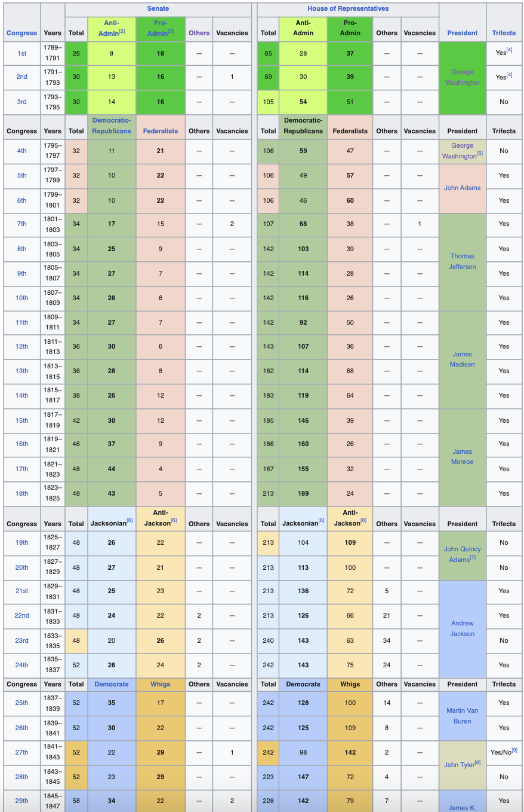
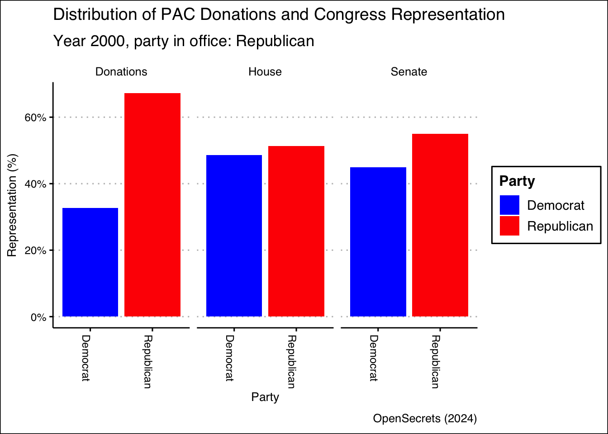
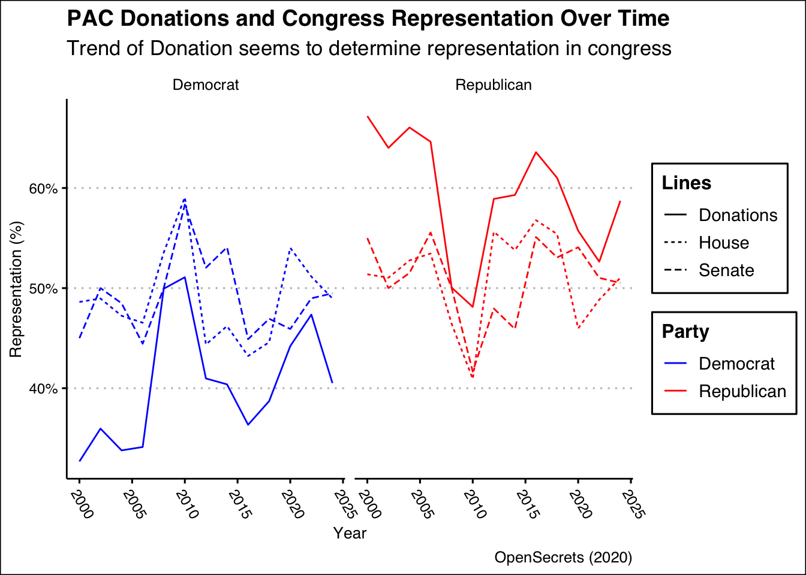
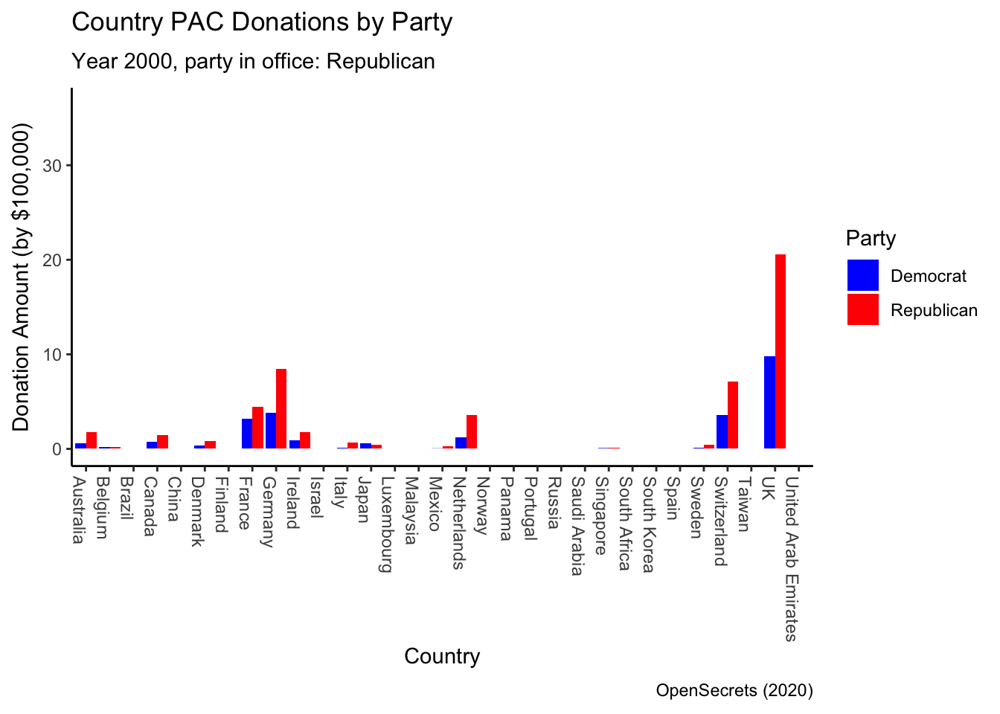

# A tibble: 2,636 × 6
`PAC Name (Affiliate)` Country of Origin/Pa…¹ Total Dems Repubs year
<chr> <chr> <chr> <chr> <chr> <dbl>
1 7-Eleven Japan/Ito-Yokado $8500 $1500 $7000 2000
2 ABB Group Switzerland/Asea Brow… $460… $170… $28500 2000
3 Accenture UK/Accenture plc $759… $230… $52984 2000
4 ACE INA UK/ACE Group $385… $125… $26000 2000
5 Acuson Corp (Siemens AG) Germany/Siemens AG $2000 $2000 $0 2000
6 Adtranz (DaimlerChrysler) Germany/DaimlerChrysl… $105… $100… $500 2000
7 AE Staley Manufacturing (Tat… UK/Tate & Lyle $240… $100… $14000 2000
8 AEGON USA (AEGON NV) Netherlands/Aegon NV $582… $105… $47750 2000
9 AIM Management Group UK/AMVESCAP $250… $100… $15000 2000
10 Air Liquide America France/L'Air Liquide … $0 $0 $0 2000
# ℹ 2,626 more rows
# ℹ abbreviated name: ¹`Country of Origin/Parent Company`PAC Analysis
Introduction
This project aims to examine the impact of foreign-connected Political Action Committee (PAC) donations on US politics from 2000 to 2024. Specifically, it will analyze the possible correlation between the contributions made by PACs affiliated with foreign companies or entities to Democratic and Republican seats in Congress to the presidential election results. The ultimate goal is to determine whether there is a relationship between Foreign PAC Donations and US political results, and if so, to understand the extent to which such donations influence political outcomes and partisan dynamics in the United States.
Data Methodology
OpenSecrets
For OpenSecrets Dataset (Raw: 2636 Rows; No NAs; Predictors: PAC Donation amount):
The dataset includes information on PAC donations from foreign-connected entities to US political parties from 2000 to 2024 (Initially in two-year intervals but was later combined).
It consists of columns such as PAC Name (Affiliate), Country of Origin/Parent Company, Total donation amount, and amounts donated to Democratic and Republican parties. Each row represents a different PAC donation entry, detailing the contribution amounts and affiliations.
Data types in the dataset include strings for PAC names and countries of origin and integers or floats for donation amounts.
After some data wrangling and processing, the ultiamte PAC dataset that will be analyze upon looks like following:
# A tibble: 286 × 5
country dems_sum repubs_sum total_sum year_cycle
<chr> <dbl> <dbl> <dbl> <dbl>
1 Australia 61850 174000 235850 2000
2 Australia 70019 42333 112352 2002
3 Australia 137969 113498 252705 2004
4 Australia 21088 8500 29588 2006
5 Australia 25158 13750 38908 2008
6 Australia 32376 17000 49376 2010
7 Australia 53353 24500 77853 2012
8 Australia 31655 44100 75755 2014
9 Australia 39285 92200 131485 2016
10 Australia 35601 116506 152107 2018
# ℹ 276 more rowsCongressional Distribution by Parties
For Wikipedia Dataset (Raw: 118 Rows; No NAs; Target Variable: Seats by Parties):

The dataset provides a record of the party divisions within the United States Congress since 1789 through various congressional sessions.
It includes columns such as Congress, Years, Senate composition (Total, Anti-Administration, Pro-Administration, Others, Vacancies), House of Representatives composition (Total, Anti-Administration, Pro-Administration, Others, Vacancies), President, and Trifecta status. Each row corresponds to a specific congressional session, detailing the composition of the Senate and House of Representatives, any presidential affiliations, and whether a trifecta scenario was present.
Data types in the dataset include integers for numerical values such as the total number of seats and vacancies, strings for textual information such as the President’s name, and categorical variables for party affiliations.
Similarly, the ultiamte Congress Parties dataset that will be analyze upon looks like following:
# A tibble: 13 × 5
year democratic_senate_1 republican_senate_1 democratic_house_1
<dbl> <dbl> <dbl> <dbl>
1 2000 45 55 211
2 2002 50 50 212
3 2004 48 51 205
4 2006 44 55 202
5 2008 49 49 233
6 2010 56 40 257
7 2012 51 47 193
8 2014 53 45 201
9 2016 44 54 188
10 2018 46 52 194
11 2020 45 53 235
12 2022 48 50 222
13 2024 48 49 213
# ℹ 1 more variable: republican_house_1 <dbl>Data Wrangling
Analysis
Overview of PAC Influence on US Congress Representation


Correlation Between House of Representative and Donation Percentages: Republican: 0.745 Democratic: 0.736
Correlation Between Senate and Donation Percentages: Republican: 0.612 Democratic 0.604
From the plots, it seems that the party representation in Congress almost parallels the trend of foreign-connected PAC donations.
In fact, looking closely, the trend of donations seem the predict the representation as the changes in donations happen earlier than the changes in representation.
Additionally, it seems that Republicans usually receive more PAC donations than Democrats, but the percentage of donations of the Democrats seem to be growing closer to that of Republicans in recent years.
PAC by Countries/Regions

Call:
lm(formula = Donations ~ House, data = predanalysis)
Residuals:
Min 1Q Median 3Q Max
-0.151717 -0.071430 0.000949 0.068736 0.153446
Coefficients:
Estimate Std. Error t value Pr(>|t|)
(Intercept) -0.2218 0.2076 -1.068 0.29594
House 1.4406 0.4136 3.483 0.00192 **
---
Signif. codes: 0 '***' 0.001 '**' 0.01 '*' 0.05 '.' 0.1 ' ' 1
Residual standard error: 0.09387 on 24 degrees of freedom
Multiple R-squared: 0.3358, Adjusted R-squared: 0.3081
F-statistic: 12.13 on 1 and 24 DF, p-value: 0.00192